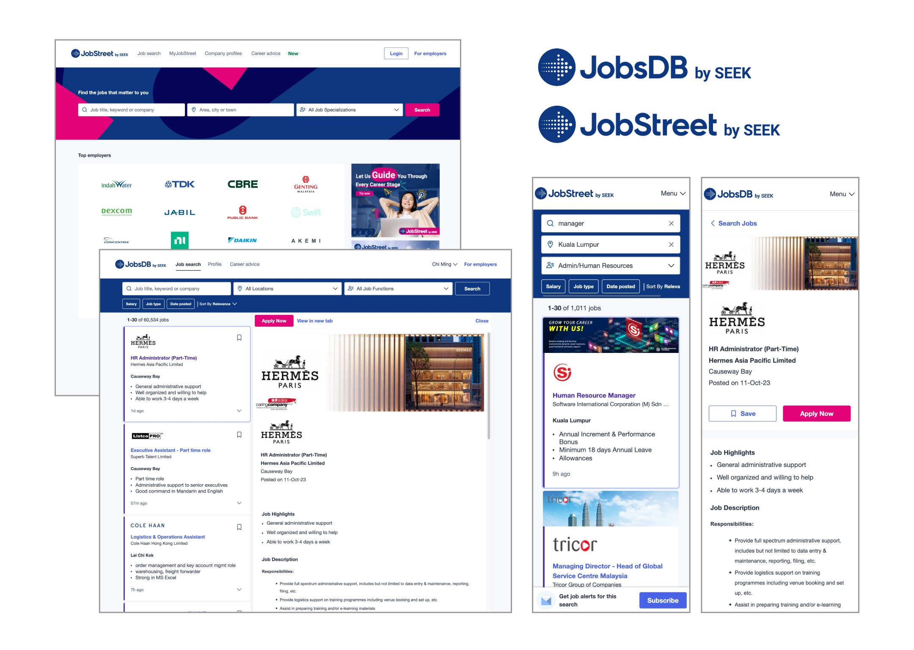
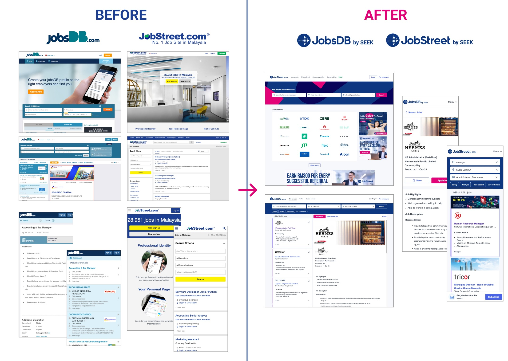
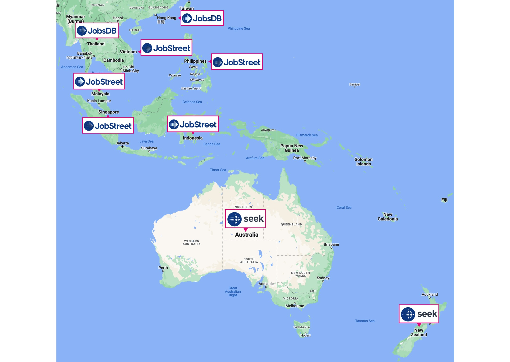
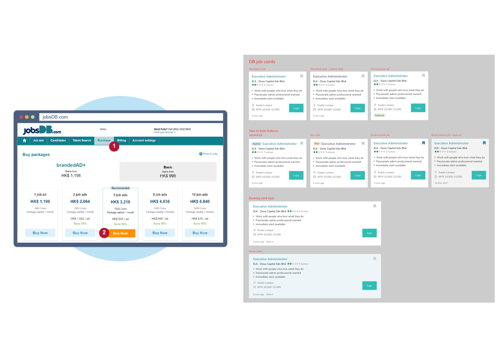
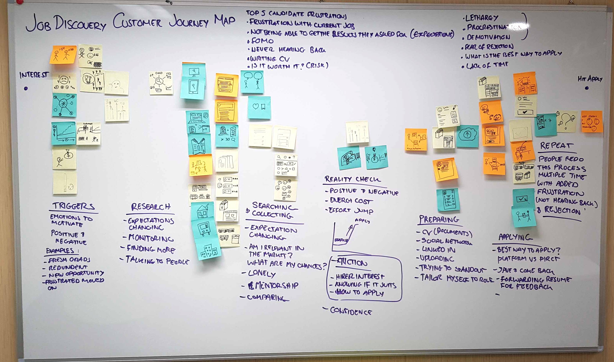
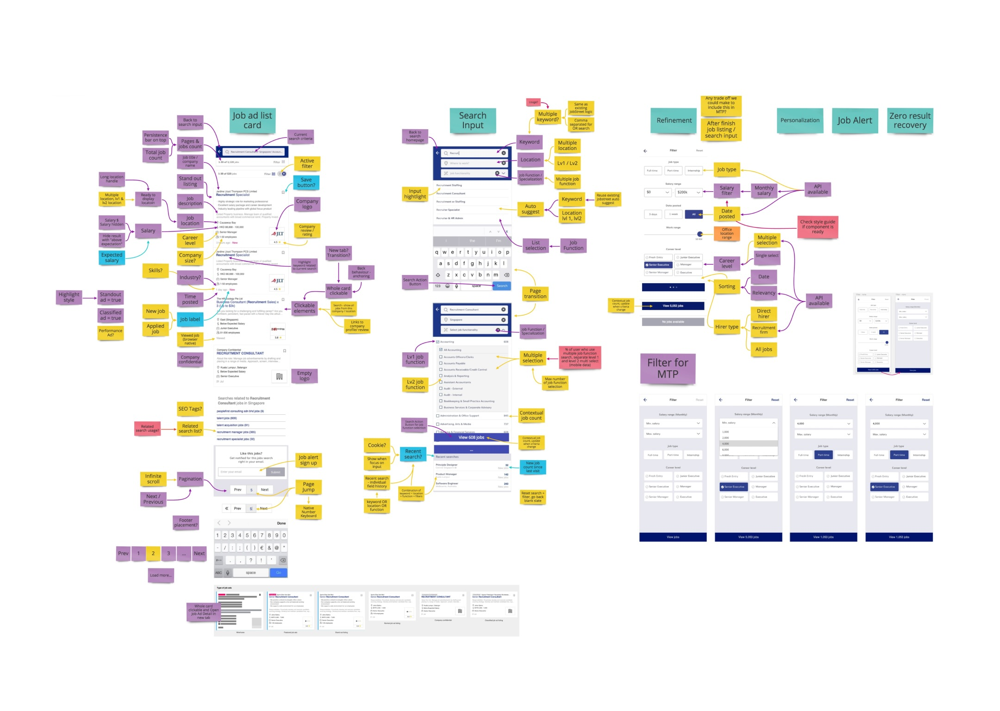
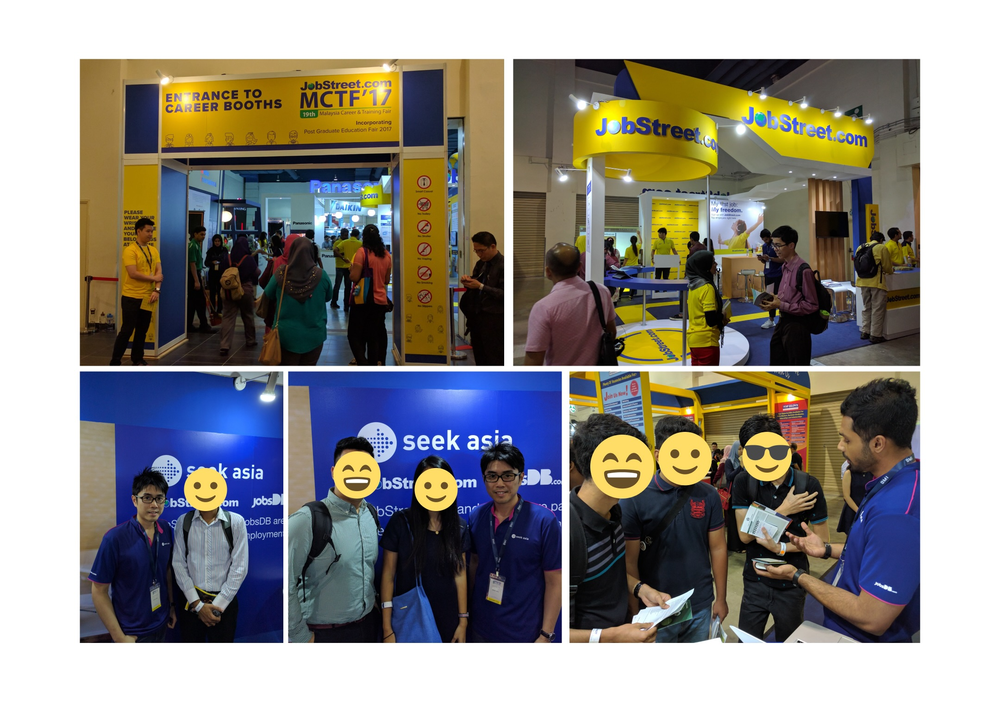
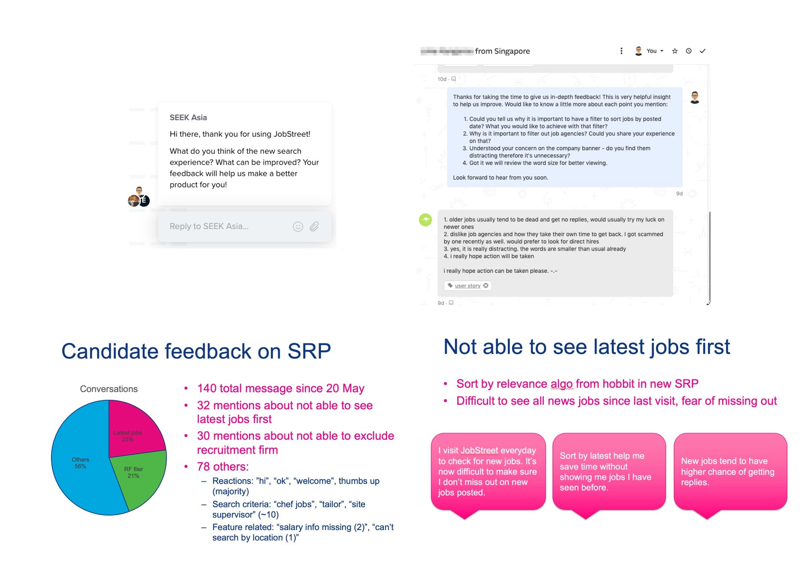

Unifying job seeker experience across Asia Pacific
SEEK expanded into Asia Pacific by acquiring JobStreet and JobsDB — leaving three separately-run brands. The "One SEEK" unification project rebuilt job discovery as a single, modern experience across six markets, shipped by a distributed cross-functional team.

Three brands, one long-term vision.
SEEK, a leader in the online employment marketplace originally based in Australia and New Zealand, expanded into Asia by acquiring JobStreet and JobsDB in 2014. With three distinct brands — each running its own website and app — improving the product became inefficient. SEEK launched the "One SEEK" unification project to simplify the platform across all APAC markets and address this fragmentation.
The project laid the foundation for One SEEK by replacing the legacy JobStreet and JobsDB platforms with modern, responsive websites — and doubled as an experiment in running a distributed cross-functional product team across Australia, Malaysia and Hong Kong, setting an example for how the company could evolve.
Across three years, the project:
Examined the unique business and customer needs of six Asian markets to find common ground aligned with the long-term goal; explored the technical requirements for a future-friendly "One SEEK" solution; set an 11-star vision for the long-term job seeker experience and identified the first, humble step toward it; adapted a new machine-learning search algorithm personalised to job seeker behaviour; built and shipped SEEK's in-house design system, Braid, for consistent components; unified millions of SEO links across the two brands while improving Google ranking and preserving backward compatibility; and shipped an MVP as an A/B test, scaling fast once the new platform outperformed the legacy site.
The result: a 12% improvement in search performance and a meaningful increase in job applications, benefiting over 40 million job seekers — while streamlining iteration speed and inspiring further unification efforts across the organisation.
Leading design across a 30-person distributed team.
As product design lead, I played a pivotal role in exploring the unique business and customer needs across markets — ideating and shaping the MVP alongside product managers and engineers, contributing to the Braid design system, preparing colleagues and job seekers for launch, and collecting job seeker feedback for rapid iteration.
I worked in close partnership with an agile product team of over 30 people — product managers, designers, engineers, data scientists and analysts — spanning Hong Kong, Malaysia and Australia, coordinated through Zoom, Slack, Jira and Confluence.
From legacy fragmentation to one modern experience.

Three brands were quietly slowing everything down.
JobStreet and JobsDB were market leaders across seven Asia markets — Malaysia, Singapore, Hong Kong, Thailand, the Philippines, Indonesia and Vietnam. The original plan was to keep the three brands running independently, with plenty of local customisation for each market.
After the acquisition, fragmentation quickly emerged as a major blocker. Any improvement — a new search algorithm or something as small as adding "work from home" search — had to be duplicated across three or more codebases, each with its own launch strategy. That redundancy compounded with every iteration, making product improvement unacceptably slow against global competitors who could experiment and evolve faster.
The ultimate goal was becoming One SEEK — from three regionally-managed products to a single global product managed by one global team. This unification project built the foundation for that vision: a unifying product designed with multiple brands in mind, delivered by a distributed cross-functional team.

Empathise, define, ideate, prototype, test.
A five-step approach to build the right thing, ship fast, and iterate with real user feedback.

Empathise with the fundamental business and user requirement
I began with in-depth research into how the existing system worked and why — talking to product managers, designers, engineers, and sales and marketing to understand the full experience, then testing it hands-on: setting up accounts, purchasing job ad packages, posting test ads as a hirer, and applying to them as a job seeker.
From there I outlined the project's business goals, balancing urgency with quality. The team adopted a "launch fast and learn" strategy — testing high-risk assumptions, favouring common solutions, and customising only when necessary — while identifying the non-negotiable constraints of the existing system to preserve.
Define what success looks like
Working closely with the product manager and engineers, I helped define the project's success parameters — examining business and technical requirements, structuring a timeline and launch pace, and scoping the first launch: an MVP in the Singapore market as an initial test. The focus stayed on shipping a unified job discovery experience and iterating continuously from there.

Ideate different ways to get there
I ran design workshops to build a shared understanding of the job seeker journey — the foundation for a genuinely useful discovery experience — then led ideation on the unified job search experience, mapping each interface component to its technical function alongside the product manager and engineers.

Shaping the design vision
These sessions translated into a concrete design vision for the unified search experience — refined iteratively with the product manager and software engineers to stay technically grounded.

Prototype to get real-world feedback early
We built an InVision prototype and I travelled to Kuala Lumpur to test it at a local job fair, putting it directly in front of real job seekers. That surfaced how they actually chose keywords, location and category, and how they judged which listings were worth exploring — insights that grounded every design iteration that followed in genuine user behaviour.

Test the new solution with A/B testing
We rolled out the new experience as an A/B test in each market. I built a feedback survey via Intercom to capture job seekers' first impressions, ran dedicated live-support hours to respond in real time, and set up a Slack channel that fed live feedback to the whole team.
I then grouped feedback into themes and presented them back to the team with real user quotes — keeping everyone aligned with the user pulse throughout a rapid platform launch.
A faster platform, for 40 million job seekers.
Unifying the job discovery experience across JobsDB and JobStreet delivered a 12% improvement in search performance and a 9% increase in job applications, benefiting over 40 million job seekers every month.
It also accelerated future iteration speed threefold, laid the groundwork for the broader One SEEK product, and helped establish a genuinely collaborative, high-performing distributed team.
Curious how I'd approach your product?
Always happy to trade ideas, chat about craft, or hear what you're building. My inbox is open.